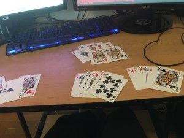

Test Plan
This project involves several pieces that require testing: the card identification model, the back-end server,
front-end application, whether they are cross-platform capable, various hardware and software combinations, and whether
the interface is user friendly and bug free. This is the team's plan to resolve most, if not all, issues related to that.
For those unfamiliar with Euchre, here is a link
describing the game and how to play.
Tools and Environments Used in Development
-
OS
- Ubuntu 16.04
- Mac OSX
- Google Cloud Platform Unix Shell (Ubuntu)
-
Languages/Libraries
-
Python 2.7 & 3.6
Libraries
- Tensorflow: Google's open source object detction machine learning framework
- Flask: An open source server side framework for useful for serving a Tenmsorflow model
- werkzeug: Werkzeug is a WSGI utility library for Python. More can be found here
- base64: This standard defines the Base16, Base32, and Base64 algorithms for encoding and decoding arbitrary binary strings into
text strings that can be safely sent by email, used as parts of URLs, or included as part of an HTTP POST request. More can be found
here.
- numpy: A powerful library for performing efficient linear algebra on matrices or lists.
- collections: This module implements specialized container datatypes providing alternatives to Python’s general purpose built-in containers,
dict, list, set, and tuple. More can be found here.
- matplotlib: A plotting library for the Python programming language and its numerical mathematics extension NumPy. More information
on this library can be found here.
- PIL: (aka pillow or Pillow) An image modification library. More information on it can be found here.
- threading: A library used for multithreading.
-
Javascript: This was used for developing the front end of the appliction in unison with the flask server developed in Python.
-
Other Tools
- Google Cloud Platform: Used the machine learning service to train on the card image data set and develop the card identification model.
Also allowed the group to freeze a trained model and use it on the server.
- ngrok: An application for providing a remote PC a URL to a local machine and have the remote PC treated as if it were on
the local machine. This enabled pubic hosting of the application server instead of only being available on a local machine.
Testing
- Unit Testing
- Model
- Test against an image with no cards in it. Does it return “None”?
- Test every individual card, i.e. 9-A of all four suits. Does it identify them correctly?
- Test an image of a Euchre Hand. Does it identify every truncated image correctly?
For example, can it properly identify each card in the image below. Notice that only parts of the
cards are visible here.
-
Test an image with multiple Euchre hands. Does it identify every card image correctly?
For example, can it identify the cards in the image below?

- Test against various Euchre hands and combinations of known card types. Does it identify every card correctly?
- Test against cards that are not included in a Euchre deck, like 8 of Hearts. Does it return “None”?
- Test against an image with every Euchre card in it. Does it recognize all of the cards?
-
Test against non-standard card images. Does it still recognize the card?
For example, can it identify the image given below.
- Server
- Feed an image to the server in. Does it respond? Does it send back an image?
- Send a non-image file to the server. Does it respond? Does it handle invalid input by sending an error message?
- Send an image to the server, wait for its response, send corrections to the server. Does it make the corrections and send them back to the user?
- Send a NULL input to the server. Does it handle it appropriately/gracefully?
- Test how long it takes the server to respond to a request. Should be within 5-10 seconds for smaller image resolutions.
- Web Application
- Attempt to send an empty input to the server. Does it disallow an empty input? Does it require a file before sending to the server?
- Attempt to send a file without specifying the trump. Does it not allow the user to do so?
- Attempt to send an invalid file type, like .xml file to the server. Does it not allow the user to do so?
- Is the web page viewable to users on the www, i.e. can one access it from outside the local machine?
- Is it viewable/readable on a mobile device?
- Integration/Functional Testing
- Go to web page. Is it available to users, i.e. can one access it outside of the local machine?
- Send image and trump suit to server. Does it respond? Does it reply with the card labels and the labelled cards in the image?
- System Testing
- Windows 10
- Google Chrome
- Microsoft Edge
- Mozilla Firefox
- Mac OSX
- Safari
- Google Chrome
- Mozilla Firefox
- Mobile
- Safari
- Google Chrome (ios)
- Default Android Browser
- Google Chrome (Android)
- User/Acceptance Testing
Since different group members will have more experience developing certain parts of the application than others,
we will have those less experienced with the web application for testing that end of it and providing feedback to the most
experienced members of each component.
On top of that, we will have a few peers outside the team testing the application to see if they can find any issues.
The model will be tested through automated evaluation jobs that can be run on the cloud in order to speed up
the evaluation and collect significant data. This will not have a direct user component (except for preparing
the images to test with).